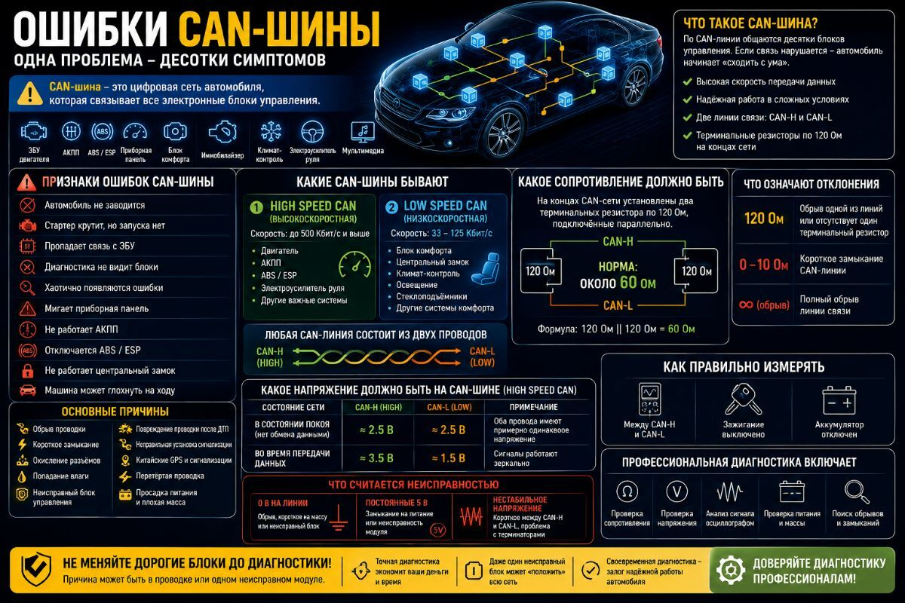

⚡ Что такое CAN-шина в автомобиле
CAN-шина — это цифровая сеть автомобиля, через которую все электронные блоки обмениваются информацией.
📡 По CAN-линии общаются:
- ЭБУ двигателя
- АКПП
- ABS
- ESP
- приборная панель
- блок комфорта
- климат-контроль
- иммобилайзер
- электроусилитель руля
- мультимедиа
Современный автомобиль может содержать несколько отдельных CAN-сетей одновременно.
🔧 Какие CAN-шины бывают
В большинстве автомобилей используется несколько типов CAN-сетей.
🚀 High Speed CAN (Высокоскоростная CAN)
Используется для важных систем:
✅ Двигатель
✅ АКПП
✅ ABS
✅ ESP
✅ Электроусилитель руля
📈 Скорость обмена:
до 500 Кбит/с и выше.
Именно эта линия чаще всего влияет на запуск двигателя.
🛋 Low Speed CAN (Низкоскоростная CAN)
Используется для систем комфорта:
✅ Центральный замок
✅ Стеклоподъёмники
✅ Климат-контроль
✅ Освещение
✅ Сиденья
✅ Блок комфорта
📉 Скорость ниже:
обычно 33–125 Кбит/с.
🌐 CAN High и CAN Low
Любая CAN-линия состоит из двух проводов:
🟢 CAN High (CAN-H)
🟠 CAN Low (CAN-L)
Они работают в паре и передают зеркальный сигнал.
Именно поэтому при повреждении одного провода сеть начинает работать нестабильно либо полностью перестаёт работать.
📏 Какое сопротивление должно быть у CAN-шины
Одно из самых важных измерений при диагностике — сопротивление CAN-линии.
✅ Нормальное сопротивление CAN:
🔹 Около 60 Ом
Это стандартное значение для большинства автомобилей.
🧠 Почему именно 60 Ом
На концах CAN-сети установлены два терминальных резистора:
- по 120 Ом каждый
Они подключены параллельно.
Формула сопротивления:
R=120⋅120120+120=60 ΩR=\frac{120 \cdot 120}{120+120}=60\ \OmegaR=120+120120⋅120=60 Ω
Поэтому исправная сеть обычно показывает:
✅ 60 Ом
⚠️ Что означают отклонения сопротивления
❌ 120 Ом
Обычно означает:
- обрыв одной из линий
- отсутствует один терминальный резистор
- отключён один из блоков
❌ 0–10 Ом
Чаще всего:
⚡ короткое замыкание CAN-линии
❌ Бесконечность (обрыв)
Обычно:
🔌 полностью разорвана линия связи
🔍 Как правильно измерять сопротивление CAN
Измерение выполняется:
✅ При выключенном зажигании
✅ С отключённым аккумулятором
✅ Между CAN-H и CAN-L
Чаще всего проверка делается через диагностический разъём OBD.
🚨 Что происходит при неисправности CAN-шины
Автомобиль может:
❌ Не заводиться
❌ Терять связь с ЭБУ
❌ Выдавать хаотичные ошибки
❌ Блокировать запуск
❌ Отключать ABS и ESP
❌ Не видеть АКПП
❌ Глохнуть на ходу
Иногда причиной становится всего один неисправный блок, который «сажает» всю сеть.
🛠 Что чаще всего ломает CAN-шину
🔧 Некачественная установка сигнализации
💧 Попадание влаги
🔥 Замыкание проводки
🧪 Окисление контактов
🚧 Последствия ДТП
🐭 Повреждение проводов
🔋 Просадка питания
📡 Китайские GPS-трекеры и сигнализации
💡 Важно понимать
Ошибки CAN-шины — это не всегда неисправный ЭБУ.
Очень часто проблема:
- в проводке
- в массе
- в коротком замыкании
- в одном неисправном блоке
Поэтому грамотная диагностика CAN-сети позволяет избежать дорогой и ненужной замены электронных блоков.
⚡ Какое напряжение должно быть на CAN-шине
При диагностике CAN-линии важно проверять не только сопротивление, но и напряжение на проводах CAN-H и CAN-L.
🔌 Напряжение на High Speed CAN
✅ В состоянии покоя:
🟢 CAN High (CAN-H) ≈ 2.5 В
🟠 CAN Low (CAN-L) ≈ 2.5 В
Когда обмена данными нет — оба провода имеют примерно одинаковое напряжение.
📡 Во время передачи данных
При работе сети напряжение начинает изменяться.
🚀 CAN-H:
повышается примерно до:
🔹 3.5 В
🚀 CAN-L:
понижается примерно до:
🔹 1.5 В
📈 Как работает сигнал CAN
Сигналы работают зеркально:
📶 CAN-H идёт вверх
📶 CAN-L идёт вниз
Именно разница между ними создаёт цифровой сигнал связи между блоками.
⚠️ Что считается неисправностью
❌ 0 В на линии
Возможен:
- обрыв
- короткое замыкание на массу
- неисправный блок
❌ Постоянные 5 В
Часто означает:
- замыкание на питание
- неисправность одного из модулей
❌ Одинаковое нестабильное напряжение
Может быть:
- короткое между CAN-H и CAN-L
- проблема с терминаторами
- неисправный ЭБУ или модуль
🔧 Low Speed CAN напряжение
На Low Speed CAN значения могут отличаться в зависимости от производителя автомобиля.
Обычно:
🟢 CAN-H ≈ 0–5 В
🟠 CAN-L ≈ 0–5 В
Но принцип диагностики остаётся тем же:
- проверка зеркальности сигнала
- проверка сопротивления
- поиск коротких замыканий и обрывов
🛠 Что важно при диагностике
Проверка CAN-шины выполняется:
✅ мультиметром
✅ осциллографом
✅ диагностическим оборудованием
Только комплексная проверка позволяет точно определить:
- неисправный блок
- обрыв линии
- короткое замыкание
- просадку питания
- проблему с массой
💡 Важно помнить
Даже если сопротивление CAN-шины нормальное — это ещё не означает, что сеть исправна.
Очень часто:
⚠️ напряжение есть
⚠️ сопротивление в норме
⚠️ но сигнал искажается неисправным блоком
Поэтому профессиональная диагностика CAN-линии всегда включает:
- проверку сопротивления
- проверку напряжения
- анализ формы сигнала осциллографом.
Читайте также: «Как правильно проверить текущие параметры двигателя» и «Kia Cerato 2016 нет связи с блоками».
Нужна помощь? Компьютерная диагностика авто в Алматы — выезд по городу и области.
